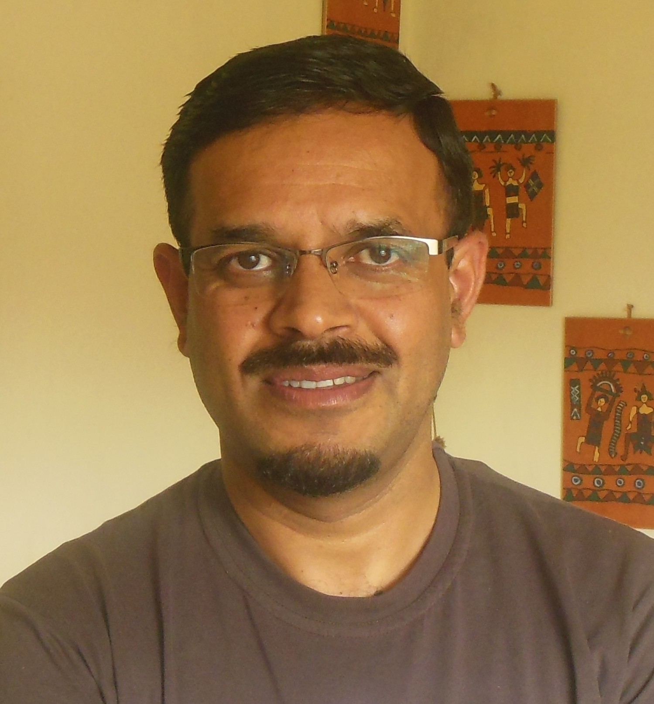
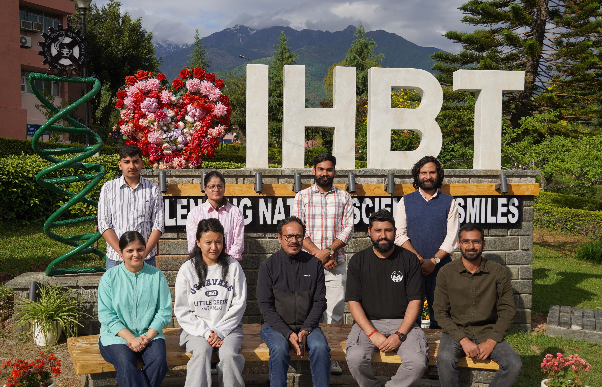

What we are...
We are a group of researchers, explorers, and storytellers brought together by a shared fascination with forests, wilderness, and the people who live alongside them. We are united by a curiosity about how forest ecosystems function and how they continue to support communities, cultures, and livelihoods around the world.
At our core, we are a collaborative community of scholars, learners, and mentors who value diverse perspectives and open exchange of ideas. We deeply respect the knowledge, experiences, and stewardship of communities that have cared for these landscapes for generations. By embracing both scientific inquiry and traditional wisdom, we seek to foster a richer understanding of the connections between people, forests, and sustainable futures.
Our Research →What We Do...
We study forests from multiple perspectives—exploring the relationships between plants, people, and the environments they share. Through field research, collaboration, and scientific inquiry, we seek to better understand and sustain the connections between nature and society. Our work spans ethnobotany, plant ecology and phenology, and ecosystem services, helping to inform conservation and sustainable resource management.
Ethnobotany
Our ethnobotanical research explores the rich relationships between Himalayan communities and their surrounding plant diversity, documenting traditional knowledge, cultural practices, and the sustainable use of plant resources across diverse mountain landscapes.
Plant Ecology & Phenology
Our research in plant ecology and phenology examines how Himalayan plant communities respond to seasonal and environmental changes, providing insights into ecosystem dynamics, biodiversity patterns, and the impacts of climate change.
Ecosystem Services
Our ecosystem services research investigates the benefits that Himalayan ecosystems provide to people, including water regulation, carbon storage, biodiversity support, and cultural values, helping inform sustainable conservation and resource management strategies.
Meet the Team

Dr. Sanjay Kumar Uniyal
Chief Scientist CSIR-IHBT

Our Team
Our strength lies in the diversity of perspectives, expertise, and experiences brought together within the lab. Guided by a culture of collaboration, curiosity, and mutual learning, we believe that meaningful scientific discoveries emerge when researchers work across disciplines, share knowledge openly, and engage with both scientific and traditional knowledge systems. Together, we strive to foster an inclusive and supportive environment that nurtures innovation, critical thinking, and a shared commitment to sustainable futures.
Contact
Get in Touch
We welcome collaborations, inquiries, and prospective researchers.
Location
Room - 201, N.K. Jain Block
CSIR - Institute of Himalayan Bioresource Technology
Palampur, Distt - Kangra, Himachal Pradesh, Pin -176061
Join Us
Join a vibrant research environment where curiosity, collaboration, and innovation thrive. We welcome prospective Ph.D. scholars, interns, and trainees eager to contribute to cutting-edge research on forest ecosystems, ecosystem services, and traditional knowledge while developing valuable research skills and experience.